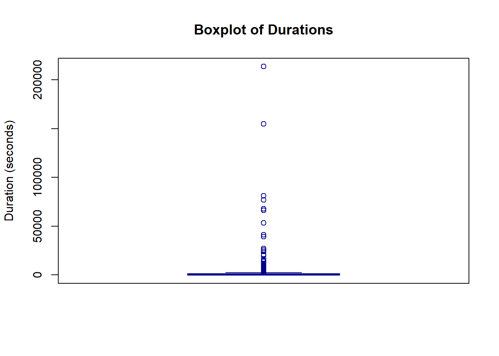

This is an R-Quarto template which can be used for your final assignment task of KODAQS Academy, Course D2 Survey. How to create citable article It contains prepared sections for each kind of data quality indicators. Choose an appropriate—for data quality related research questions—instrument from the construct Trust or Attitude. For each data quality indicator, you have to select indices that are part of the dataset and/or can be calculated, and specify whether and how you will flag/filter cases. Our final assignment task contains parts that should be worked on in a collaborative way (ALL) and parts that should worked on by individual team members (YOUR NAME). Each teammate should be responsible for at least one indicator section.
Pay Attention Please!
For our last WT prepare a short ppt-presentation (5-10 min max.) where you outline your analysis strategy (i.e. identified DQIs, and flagging/filtering rules) and show first findings/results. The preparation for and presention/participation on the weekly touchpoint is mandatory and weighs one third of your individual assignment grade. WEEKLY TOUCHPOINT (mandatory) will take place on June 5th, 2025, 11–12 am CET
Data Preparation (ALL)
In a first step you have to define your R setup (e.g., install und load relevant packages) and need to read in the dataset. Do your basic cleanup and wrangling here (e.g. filtering for your country group, selection of used variables etc.).
Load Packages and Read Data
#### ------------- Load Packages ------------- ####library(here) # find fileslibrary(tidyverse) # data managementlibrary(skimr) # descriptiveslibrary(labelled) # data labelslibrary(psych)#### ------------- Read Data ------------- ##### There are two versions of the data (!!!):# # data_raw: The raw dataset (N = 167,101) before any cleaning and transformations.## data: The analysis-ready dataset (N = 69,534), including post-stratification weights:https://osf.io/5c3qd/wiki?wiki=fqmdn# data_rawdata_raw <-read.csv(here("00_data/ds_full.csv"), sep =";") %>%filter(COUNTRY_CODE =="USA") %>%mutate(across(where(is.numeric), ~na_if(., 99))) %>%mutate(across(where(is.character), ~na_if(., "99")))# raw data needs to be processed (a liitle bit)# Source: https://osf.io/5c3qd/files/xz8bw# (1.) Identify and exclude duplicate completes# Initialize ID data (stored in separate csv file)ds_id <-read.csv(here("00_data/ds_id.csv"), sep =";") data_raw_tmp <-left_join(data_raw, ds_id, by ="ID_QUALTRICS") %>%group_by(ID_POLLCMPNY) %>%filter(is.na(ID_POLLCMPNY) |row_number(Recorded) ==1) %>%ungroup()# Confirm that there are no duplicate completes (empty tibble)data_raw_tmp %>%filter(!is.na(ID_POLLCMPNY)) %>%group_by(ID_POLLCMPNY) %>%summarise(n =n()) %>%filter(n >1)
# A tibble: 0 × 2
# ℹ 2 variables: ID_POLLCMPNY <chr>, n <int>
data_raw: The raw dataset (N = 167,101) before any cleaning or transformations.
data: The analysis-ready dataset (N = 69,534), including post-stratification.
Not all calculations can be performed using the pre-processed data, as some information is already missing. Therefore, the raw data were processed as follows:
Duplicate respondents were excluded: 0.32%
Age values outside the range of 18 to 100 were set to NA: 0.02%
Gender was temporarily recoded into a binary variable (1 = male), with self-described responses excluded from this coding.
tbc
Note to the group: I think most calculations should be done with the file ‘data_raw’.
Compute Indices
Science-related populist attitudes were measuered with 8 items on 4 dimensions on a 5-point scale each (1 = strongly disagree to 5 = strongly agree; Mede, Schäfer, & Füchslin, 2021), aggregated with the Goertz approach (Wuttke et al., 2020)
#### ------------ Compute Indices ------------ ##### SCIPOP_goertz: Science-related populist attitudes# Compute overall and dimension scoresdata_raw <- data_raw %>%mutate(SCIPOP_PPL_m =rowMeans(across(c(SCIPOP_common, SCIPOP_good)), na.rm =TRUE),SCIPOP_ELI_m =rowMeans(across(c(SCIPOP_advantage, SCIPOP_cahoots)), na.rm =TRUE),SCIPOP_DEC_m =rowMeans(across(c(SCIPOP_influence, SCIPOP_involved)), na.rm =TRUE),SCIPOP_TRU_m =rowMeans(across(c(SCIPOP_lifeexp, SCIPOP_rely)), na.rm =TRUE),SCIPOP_goertz =pmin(SCIPOP_PPL_m, SCIPOP_ELI_m, SCIPOP_DEC_m, SCIPOP_TRU_m, na.rm =TRUE) )data_raw <- labelled::set_variable_labels( data_raw,SCIPOP_goertz ="Science-related populist attitudes: overall (Goertz score)",SCIPOP_PPL_m ="Science-related populist attitudes: conceptions of the ordinary people (mean)",SCIPOP_ELI_m ="Science-related populist attitudes: conceptions of the academic elite (mean)",SCIPOP_DEC_m ="Science-related populist attitudes: demands for decision-making sovereignty (mean)",SCIPOP_TRU_m ="Science-related populist attitudes: demands for truth-speaking sovereignty (mean)")
Descriptive Analysis (ALL)
Provide basic descriptive statistics for your (sub)sample and instrument(s).
The first attention of writing “213” into a text box was failed by: 4.03% of participants.
26.88%of participants who reached the second attention check of selecting “strongly disagree” for an extra item in a scale of science-related populist attitudes did not pass it.
Para Data (Elnari Potgieter)
This section looks at the response time indices of the USA data set, considering total response time, average time per item, relative completion time and speeding factor. This is a draft version.
Total Response Time
Total response time refers to the time it takes a respondent to complete the survey. The data set contains a “Duration” variable, analysed here, capturing response time in seconds.
# Key Descriptives of Duration variable (in seconds)describe (data_raw$Duration)
vars n mean sd median trimmed mad min max range skew
X1 1 4646 1029.62 4752.27 566 645.97 569.32 3 213592 213589 30.37
kurtosis se
X1 1148.67 69.72
Mean (1174.57) larger than median (905), showing right / positive skew in data. Further analysis to look out for high value outliers. Minimum at 133 seconds (2.22 minutes), and maximum at 26943 seconds (about 7 and a half hours).
The results do not appear to show any missing / incorrectly coded data, so no need for further data cleaning. Further consideration to percentiles / quartiles.
# Consider quartilesskim(data_raw$Duration)
Data summary
Name
data_raw$Duration
Number of rows
4647
Number of columns
1
_______________________
Column type frequency:
numeric
1
________________________
Group variables
None
Variable type: numeric
skim_variable
n_missing
complete_rate
mean
sd
p0
p25
p50
p75
p100
hist
data
1
1
1029.62
4752.27
3
236
566
1057.75
213592
▇▁▁▁▁
Minimum (133) lower p25 (591), maximum (26953) much higher than mean (1174.57) and p75 (1341.25). The extreme high outliers may be due to opening the survey and only answering the survey later. This does not necessarily mean they were not paying attention when they were answering, so I don’t think their answers are necessarily invalid. However, on the lower end, 2.22 minutes for a survey with 111 items (Mede et al., 2025) - some of which open ended - sounds very short.
Box plots (in seconds) for further investigation.
# Boxplot using base Rboxplot(data_raw$Duration,main ="Boxplot of Durations",ylab ="Duration (seconds)",col ="lightblue",border ="darkblue")

Average Time per Item
The average time per item indicator captures the average (mean) time spent on survey questions.
# Number of itemsnum_items <-111# Calculate the average time per item for each respondentaverage_time_per_item <- data_raw$Duration / num_items# Compute the mean of all average times per itemmean_average_time_per_item <-mean(average_time_per_item)# Output the resultscat("Average time per item for each respondent (in seconds):\n")
Average time per item for each respondent (in seconds):
cat("\nMean of all average times per item (in seconds):", mean_average_time_per_item, "seconds\n")
Mean of all average times per item (in seconds): NA seconds
The average time per item is 10.58 seconds. However, the extreme high outliers may impact this result.
We proceed by looking at the number and proportion of respondents with an average time per item below 2 seconds (as per the course example) - this cut off can be changed for the final version.
# Identify respondents who fall below the cutoff of 2 seconds (as per example in course)cutoff <-2below_cutoff <-which(average_time_per_item < cutoff)# Count of respondents below the cutoffcount_below_cutoff <-length(below_cutoff)# Proportion of respondents below the cutoffproportion_below_cutoff <- count_below_cutoff /length(data_raw$Duration)cat("\nRespondents below the cutoff of", cutoff, "seconds:\n")
cat("\nCount of respondents below the cutoff:", count_below_cutoff, "\n")
Count of respondents below the cutoff: 1100
cat("Proportion of respondents below the cutoff:", proportion_below_cutoff, "\n")
Proportion of respondents below the cutoff: 0.2367119
Only 12 respondents (0.005%) had an average time per item below 2 seconds.
Further steps: Decide whether to run the average time analysis without high-end outliers, and then identify those with significantly slower average times per item. Decide whether the cut off should be MRT - 4.4 seconds - per item (Andreadis, 2021)
Relative Time Completion
Relative time completion compares the speed of completing the questionnaire for a respondent to the median completion time of the sample.
# Median completion time of the samplemedian_time <-905# Calculate the relative completion time for each respondentrelative_completion_time <- data_raw$Duration/ median_time# Output the resultscat("Relative completion time for each respondent:\n")
Relative completion time for each respondent:
# Summary statistics for relative completion timescat("\nSummary of relative completion times:\n")
Summary of relative completion times:
print(summary(relative_completion_time))
Min. 1st Qu. Median Mean 3rd Qu. Max. NA's
0.00331 0.26077 0.62541 1.13770 1.16878 236.01326 1
As per the course example, we calculate how many respondents are faster than twice the median completion time. Please note my findings here need to be revised. I need to check if that is median response time or median of the relative completion time.
# Identify respondents who are faster than two times the median completion timecutoff <-2faster_than_cutoff <-which(relative_completion_time > cutoff)# Count of respondents faster than two times the median completion timecount_faster <-length(faster_than_cutoff)# Proportion of respondents faster than two times the median completion timeproportion_faster <- count_faster /length(data_raw$Duration)# Identify rows where respondents are twice as fast as the median response timetwice_faster_rows <-which(relative_completion_time <2)# Output the resultscat("\nRespondents faster than two times the median completion time:\n")
Respondents faster than two times the median completion time:
cat("\nCount of respondents faster than two times the median:", count_faster, "\n")
Count of respondents faster than two times the median: 409
cat("Proportion of respondents faster than two times the median:", proportion_faster, "\n")
Proportion of respondents faster than two times the median: 0.08801377
cat("\nRows where respondents are twice as fast as the median response time:\n")
Rows where respondents are twice as fast as the median response time:
317 (13%) respondents where twice as fast as the median of the relative completion time. I did not print the rows for now, as they are quite many.
Speeding Factor
Leiner, 2019 suggests a factor of larger than two as outliers.This is calculated using their response time in relation to the median of the sample.
# Speeding factor# Calculate the speeding factor for each respondentspeeding_factor <- median_time / data_raw$Duration# Output the resultscat("Speeding factor for each respondent:\n")
Speeding factor for each respondent:
# Summary statistics for speeding factorscat("\nSummary of speeding factors:\n")
Summary of speeding factors:
print(summary(speeding_factor))
Min. 1st Qu. Median Mean 3rd Qu. Max. NA's
0.00424 0.85559 1.59894 8.43849 3.83475 301.66667 1
Some outliers with a speeding factor above 2, when considering maximum (6.8).
# Identify outliers (speeding factor > 2)outliers <-which(speeding_factor >2)# Count of outliersoutlier_count <-length(outliers)# Proportion of outliersoutlier_proportion <- outlier_count /length(data$Duration)# Output the count and proportion of outlierscat("\nCount of outliers (speeding factor > 2):", outlier_count, "\n")
Count of outliers (speeding factor > 2): 1951
cat("Proportion of outliers:", outlier_proportion, "\n")
Proportion of outliers: 0.7624072
348 (14%) respondents with speeding factor above 2. I did not print the rows for now, as there are quite many.
Summary
Suggestion to compare the rows highlighted throgugh this analysis with the rows identified in other analysed (for example attention checks) to identify respondents which may need to be flagged.
References
Knopf T., & Roth M. (2025). Tools and Workflows for Survey Data – Paradata [Slide deck]. In F. Bemmann, J. Blumenberg, J. Daikeler, F. Draxler, M. Fritz, F. Keusch, F. Krämer, S. Jünger, S. Kapidzic, T. Knopf, F. Kreuter, V. Kunz, L. Mejia Lopez, Y. Peters, B. Rammstedt, P. Siegers, J. Sun, C. Wagner, K. Weller, C. E. Yildiz, & L. Young (Eds.), KODAQS Academy.
Leiner, Dominik J.. “Too Fast, too Straight, too Weird: Non-Reactive Indicators for Meaningless Data in Internet Surveys.” Survey research methods 13 (2019): 229-248.
Mede, N.G., Cologna, V., Berger, S. et al. Perceptions of science, science communication, and climate change attitudes in 68 countries – the TISP dataset. Sci Data 12, 114 (2025). https://doi.org/10.1038/s41597-024-04100-7
Missing Data (YOUR NAME)
The third kind of data quality indicators are missing data. How much data is missing, which data missing pattern occurs and are there cases with many missing data? (in respect to your choosen instrument(s) / variable(s)).
Response Distributions (YOUR NAME)
The fourth kind of data quality indicators are response distributions. Which indicators do you deem relevant and which criterion do you use for flagging?
Response Styles (YOUR NAME)
The last kind of data quality indicators are response styles. Which style(s) do you want to focus on and how do you flag concerning cases?
All together (ALL)
Now that you have different flags you may want to combine them. Which combinations do you deem suitable? And how to (partly) filter the identified cases?
Discuss (ALL)
Discuss central findings shortly! Make some statements on your final decision in respect to include/exclude rules (cutoffs/thresholds/filter combination), data loss, consequences for planned analyses, and any notable what you like to adress.
For final submission upload your prepared Quarto document and an exported html-file into Moodle, week 8, section “Final Assignment Course D2 Survey LU8.1”. FINAL DEADLINE will be June 20th, 2025, sharp!
Good luck and see you next Thursday (June 5th) on our last weekly touchpoint!👋